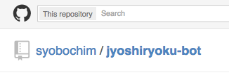

女子力のある
syobochimが
Clojure
はじめてみた
スペースで先にすすみます！（バックスペースでもどります！）
はじめに
## みなさん、Twitterやってますか？
こちらに一言添えてメンションください＞＜
@syobochim
例）@syobochim Clojure夜会頑張ってね！
## ところで
## みなさん Clojure やったことありますか？
## Clojure はこうやって関数をかきます

## 実行結果するときはこんなかんじ

## こうやって関数をかいてもおっけー

## 実行結果するときはこんなかんじ

## Source Code


# ** ( ** mytwitter ** ) **

# ** ( ** mymention ** ) **

# ** ( ** mentionInfo ** ) **

# ** ( ** resentmention ** ) **

# ** ( ** searchword ** ) **

# ** ( ** getmytweet ** ) **
## Source Code : After

# twitter bot

## [女子力bot](https://github.com/syobochim/jyoshiryoku-bot/tree/jyoshiryoku) (๑´ڡ`๑)
## 女子力bot で出来ること
- 定期的にメンションを監視
- メンションをもらう
- メンションの最初の言葉をとってくる
- @syobochim の最近のツイートから文章をつくる
- メンションを返す
## Twitter
- Twitter4jを使いました
- Javaライブラリが簡単に使えて(・∀・) ｲｲ！
## 文章をつくるところ
## マルコフ連鎖をつかった！
## syobochimのツイートから言葉をとってきて
## 文章を組み立てる
女子力の高いツイート ＋ 女子力の高いツイート
## ＝ 女子力の高いツイート
そろそろ最初にいただいたメンションに
返信したころかな…？
Clojure
女子力高まる！！
('ω' ≡ 'ω' ≡ 'ω' ≡ 'ω')